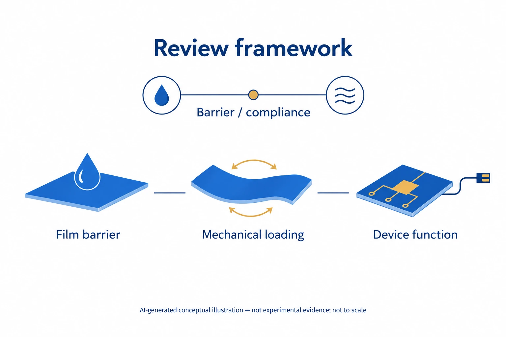

Why this research matters
This review examines encapsulation strategies that protect flexible OLEDs from moisture and oxygen while accommodating bending. It connects film-barrier properties, deformation-induced defects and operating-device degradation across conventional displays and biointegrated applications.
The problem
Flexible encapsulation must keep out moisture while withstanding repeated movement. Inorganic films can crack, polymers can transmit moisture, and interfaces can contain defects. The review connects these different failure routes to the protection a device needs.
How the study approaches it
Combining barrier layers with compliant layers does not automatically remove interfacial defects. Bioelectronic applications also require chemical stability and appropriate tissue interaction. Low permeability in an isolated film is therefore only one part of the evidence for an integrated device.

AI-generated concept: the review separates film-barrier tests, mechanical loading and device-function tests. The icons identify categories of evidence rather than measurements of permeability or retained function.
The droplet represents moisture exposure, not a water-vapor transmission method or contact-angle result. Bending and circuit symbols do not specify a test setup, deformation conditions, measured performance or the best material.
This is not a reproduced paper figure and does not establish permission to reuse the original figure.
What was tested
Water-vapor tests use different principles and sensitivities, including cup, instrument-based, impedance and calcium methods. Temperature, humidity, thickness and detection conditions all affect comparison. Measuring barrier performance after bending is needed to connect a film's deformation history to its protective function.
What the study found
Changes in brightness, voltage and dark spots reveal device degradation, while permeability tests characterize the film. A single mechanical test also cannot represent every use condition. The review links evidence from an intact film, a deformed film and an operating device in separate stages.
What remains to be answered
Practical questions include low-temperature processing, defect control over large areas and manufacturing reproducibility. Accelerated aging requires a suitable model of failure before it can predict use lifetime. The cited numerical studies were not individually reviewed, so the summary does not identify one universally best barrier.
Related research
Ultraflexible organic photonic skin
Skin-mounted light emitters and photodetectors provide an experimental example of thin encapsulation and conformal contact.
One device demonstration does not establish long-term stability or implant safety for every encapsulation material.
Abstract-based introductionSources used in this summary
The public Wiley review was read selectively: §§3.1–3.3 on barrier, mechanical and device evaluation; §§5.3–5.4 on bioelectronics and practical limits; and the opening of §6. Cited numerical results and processes were not individually reviewed, and supplementary information was not comprehensively read.